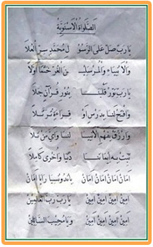

SHOLAWAT ASNAWIYAH
YAA ROBBISHOLLI ‘ALA ROSUU LI MUHAMMADIN SIRRIL ‘ULAA
WAL ANBIYAA’ WAL MURSALIIN AL GHURRI KHOT MAN AWWALAA
YAA ROBBI NAWWIR QOLBANAA BINURI QURAANIN JALA
WAFTAH LANAA BIDARSIN AW QIROATIN TUROTTALAA
WARZUQ BIFAHMIL ANBIYAA LANAA WA AYYA MANTALAA
TSABIT BIHI IIMANANAA DUNYA WA UKHRON KAMILA
AMAN AMAN AMAN AMAN INDONESIA RAYA AMAN
AMIN AMAIN AMIN AMIN YAA ROBBI ROBBAL ‘ALAMIN
AMIN AMIN AMIN AMIN WAYAA MUJIIBASSAILIIN
Sholawat Asnawiyah merupakan Sholawat gubahan syair karya Kyai Haji Raden Asnawi (KHR. Asnawi)yang terkenal hingga sekarang. Kalau boleh saya katakan bahwa Sholawat Asnawiyah merupakan “Sholawat Nasionalis” , karena kalau kita mau menyimak syair Sholawat tersebut, akan terlihat betapa Kiai Asnawi sangat mencintai Indonesia. Dalam syair tersebut terdapat doa yang khusus untuk Indonesia agar aman. Kiai Raden Asnawi adalah seorang Ulama’ dan Kyai kharismatik terkenal dari Kudus Jawa Tengah salah seorang pendiri organisasi sosial keagamaan Islam terbesar di Indonesia dan bahkan di dunia, yakni Nahdlatul Ulama (NU). NU memang dilahirkan oleh para ulama besar di Tanah Air pada 1926. Peran Kiai Raden Asnawi dalam mendirikan NU selama ini agak dilupakan, padahal beliau termasuk salah seorang tokoh kunci dalam upaya pendirian hingga penyebaran NU di Indonesia. Beliau juga seorang pejuang kemerdekaan yang sangat mencintai negara Indonesia ( Indonesia Raya) , beliau pernah di penjara Belanda karena membela negara. Jejak perjalanan hidup Kiai Raden Asnawi menunjukkan bahwa beliau adalah seorang tokoh besar Islam yang mencintai negaranya, Ulama’ yang berjiwa nasionalis sejati.
Wallahu A’lam